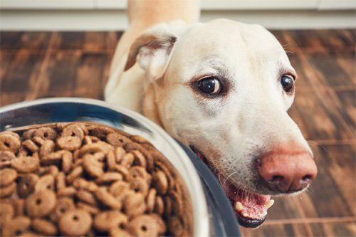
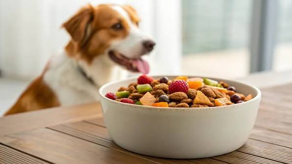

Dog Feeding Guide
Good nutrition helps dogs stay healthy, active and happy. Dogs need balanced food and clean drinking water every day.
Types of Dog Food
1. Dry Food
Dry dog food is convenient to store and serve.

2. Wet Food
Wet dog food contains more moisture.
3. Home-Cooked Food
Home-cooked meals should be balanced with advice from a veterinarian.

Foods Dogs Should Avoid
- Chocolate
- Grapes and raisins
- Onions and garlic
- Alcohol
- Foods containing xylitol
General Feeding Guide
| Dog's Age | General Meal Frequency |
|---|---|
| Puppies | Usually 3–4 meals daily |
| Adult Dogs | Usually 2 meals daily |
| Senior Dogs | Depends on individual needs |
Feeding needs vary depending on a dog's age, size and health. Ask a veterinarian for personalised feeding advice.